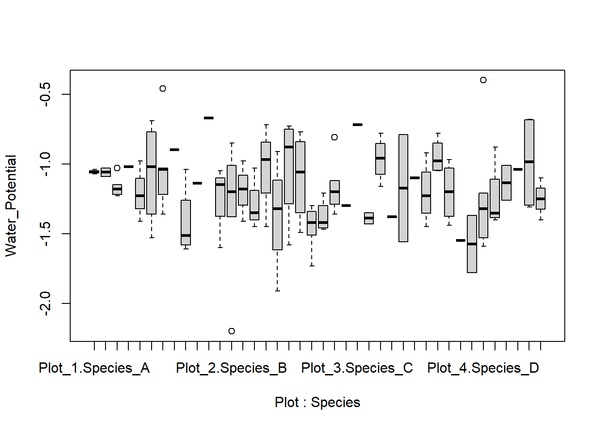
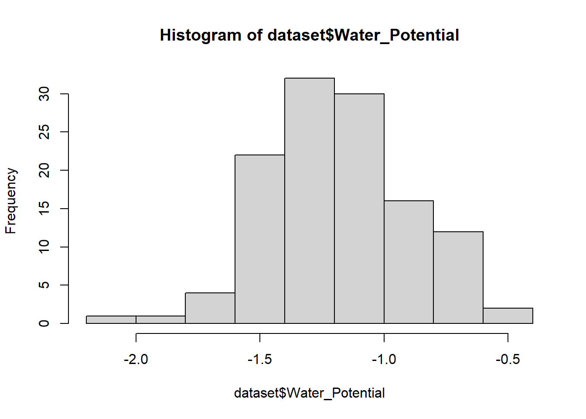
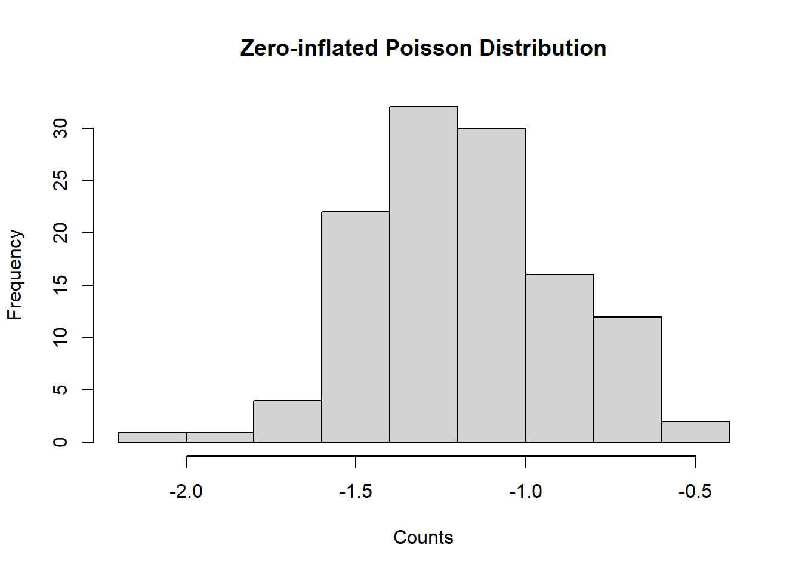
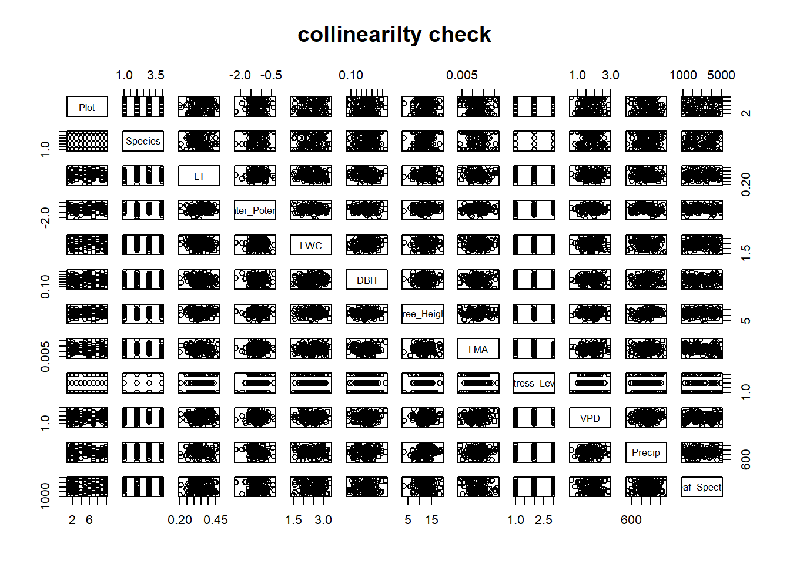
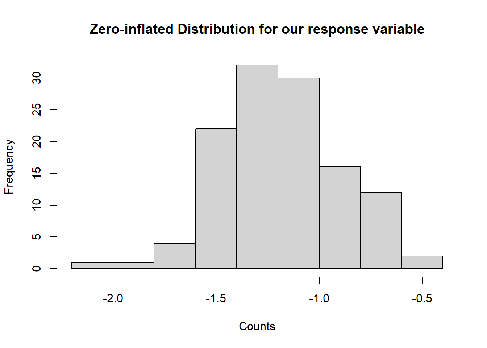
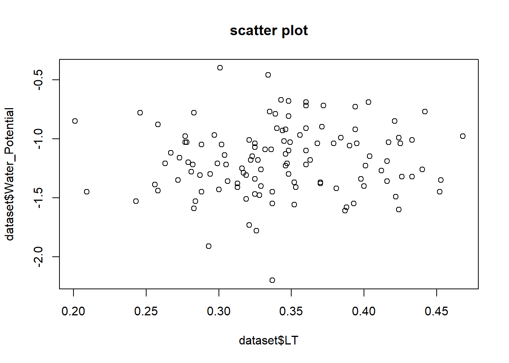
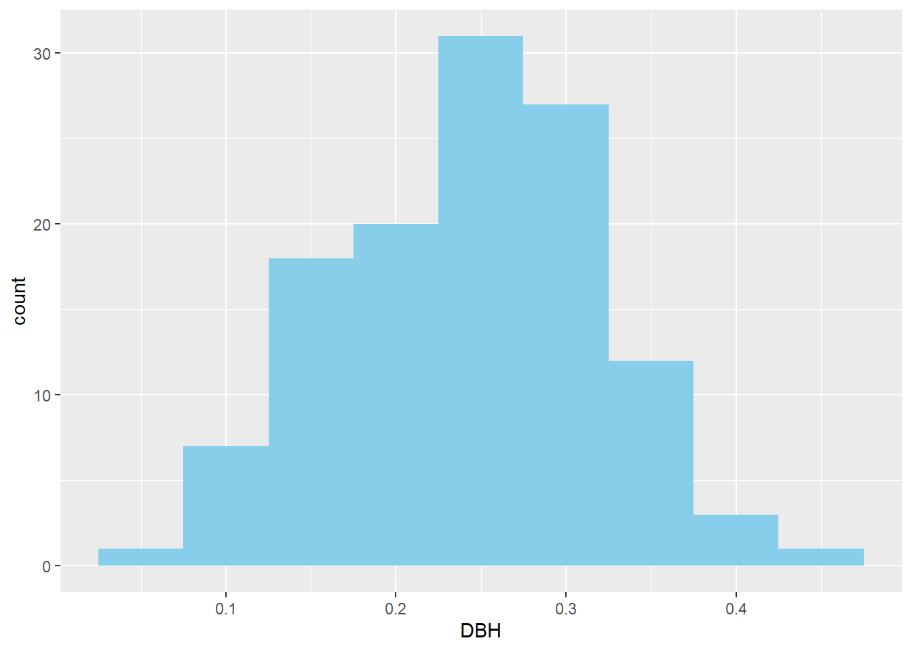

Plot Species LT Water_Potential
Length:120 Length:120 Min. :0.2010 Min. :-2.200
Class :character Class :character 1st Qu.:0.3035 1st Qu.:-1.380
Mode :character Mode :character Median :0.3395 Median :-1.195
Mean :0.3424 Mean :-1.181
3rd Qu.:0.3817 3rd Qu.:-1.005
Max. :0.4680 Max. :-0.400
LWC DBH Tree_Height LMA
Min. :1.420 Min. :0.0700 Min. : 3.10 Min. :0.00390
1st Qu.:2.067 1st Qu.:0.1900 1st Qu.:10.38 1st Qu.:0.00940
Median :2.445 Median :0.2500 Median :11.95 Median :0.01240
Mean :2.427 Mean :0.2417 Mean :12.12 Mean :0.01222
3rd Qu.:2.757 3rd Qu.:0.2925 3rd Qu.:13.93 3rd Qu.:0.01432
Max. :3.340 Max. :0.4300 Max. :19.30 Max. :0.02160
Stress_Level VPD Precip Leaf_Spectral
Min. :1.000 Min. :0.630 Min. : 522.0 Min. :1044
1st Qu.:1.000 1st Qu.:1.470 1st Qu.: 810.5 1st Qu.:1999
Median :2.000 Median :1.895 Median : 928.0 Median :2884
Mean :1.875 Mean :1.848 Mean : 919.4 Mean :2947
3rd Qu.:2.250 3rd Qu.:2.163 3rd Qu.:1030.0 3rd Qu.:3974
Max. :3.000 Max. :2.930 Max. :1291.0 Max. :4974
#distribution of nominal variablestable(dataset$Species)
# The Data Exploration Using Zuur’s 8-Step Protocol##check for outliersboxplot(dataset$Water_Potential,main ="outlier detection",ylab ="water potential (mpa)",xlab ="",col ="lightblue",border ="darkblue")
#Do we have homogeneity of variance?boxplot(Water_Potential ~ Plot:Species, data = dataset)

#Are the data normally distributed?hist(dataset$Water_Potential)

#Are there lots of zeros in the data?hist(dataset$Water_Potential, main ="Zero-inflated Poisson Distribution", xlab ="Counts")

#Collinearity X?plot(dataset, main ="collinearilty check")

#Relationships Y & Xplot(data=dataset, dataset$Water_Potential~dataset$LT)
#Are observations of the response variable independent?#Check for autocorrelation in residuals if data are time-orderedacf(dataset$Water_Potential, main ="ACF of Model Residuals")
##plot zero data# Example: simulate zero-inflated count datahist(dataset$Water_Potential, main ="Zero-inflated Distribution for our response variable", xlab ="Counts")

#scatter plot of response variable (water potential) and one of the explanatory variables (LT)plot(x = dataset$LT, y = dataset$Water_Potential, main ="scatter plot")

# Histogramsggplot(dataset, aes(x = DBH)) +geom_histogram(binwidth =0.05, fill ="skyblue")

# Boxplotsggplot(dataset, aes(x = Species, y = LT, fill = Species)) +geom_boxplot()